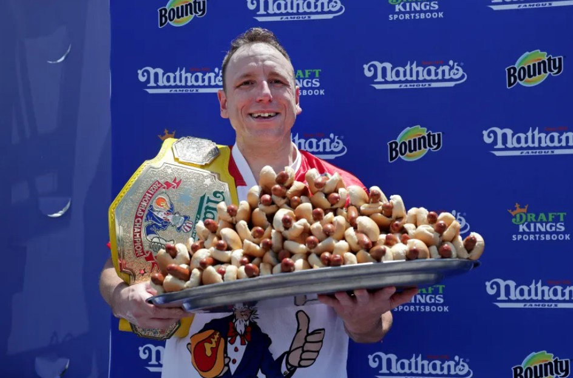

A True American Hero...
This site is about the King of Coney Island: the one, the only, Joey "Jaws" Chestnut.
Here is one cool fact: Joey Chestnut holds the world record for the most hot dogs eaten in 10 minutes: gobbling 83 glizzies in 10 minutes during a special showdown against his long-time rival Takeru Kobayashi in 2024.
To learn more about this legendary sausage slurping machine, click here:
Learn MoreTo watch his latest victory in the 2025 Nathan's Hot Dog Eating Contest, click here:
Watch the Video